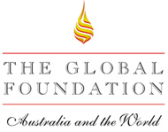

The Global Foundation Lunch in Honour of
The Hon Tony Abbott MP
Leader of the House; Minister for Health and Ageing
Friday 9 June 2006, Melbourne
The Foundation hosted a members’ lunch in Melbourne on Friday 9 June for The Hon. Tony Abbott MP, Leader of the House, Minister for Health & Ageing. The event was hosted by Mr Alex Gosman, Director, Government & Corporate Affairs, GlaxoSmithKline.
The afternoon provided an excellent opportunity for our members to hear from the Minister his perceptions about the long term challenges facing the health care system in Australia. It also provided an excellent basis for future dialogue between the Foundation and his Department.
The Minister spoke in terms of the prevention of disease, encouragement of wellness and Federal/State responsibilities in relation to the health of the workforce and cooperation between all parties in achieving this.
The Foundation values the relationship with the Minister and looks forward to continuing engagement particularly in regard to its forthcoming ‘Australia Unlimited’ program.